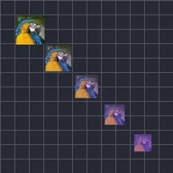

Lineare Wiederholung

Erzeugt dynamisch mehrere Kopien der Ebene und ordnet sie entlang einer Linie an.
Einstellungen
| Einstellung | Typ | Bereich | Standard |
|---|---|---|---|
| Anzahl | Zahl | 0 bis 150 | 5 |
| Position | Punkt (X, Y) | -99999 bis 99999 | 500, 0 |
| Bereichsposition | Punkt (X, Y) | -99999 bis 99999 | 0, 0 |
| Bereichsskalierung | Zahl | 0 bis 10 | 1 |
| Bereichsdrehung | Winkel | -3600° bis 3600° | 0° |
| Bereichsdeckkraft | Zahl | 0% bis 100% | 100% |
| Füllfarbe | Farbe | – | #FFFFFF |
| Füllstärke | Zahl | 0% bis 100% | 0% |
| Bereichsanfang | Zahl | 0% bis 100% | 0% |
| Bereichsende | Zahl | 0% bis 100% | 100% |
| Bereichsversatz | Zahl | -1000% bis 1000% | 0% |
| Easing | Auswahl | Linear, Langsam beginnen, Langsam enden, Langsam beginnen und enden | Linear |
| Zufällige Reihenfolge | Ein oder aus | – | Aus |
| Zufallswert | Zahl | 0 bis 9999 | 0 |
| Verzögerung pro Kopie | Zahl | -60 s bis 60 s | 0 s |
| Zufällige Position | Punkt (X, Y) | 0 bis 99999 | 0, 0 |
| Zufällige Drehung | Winkel | 0° bis 3600° | 0° |
| Zufällige Skalierung | Zahl | 0% bis 1000% | 0% |
| Zufällige Deckkraft | Zahl | 0% bis 100% | 0% |